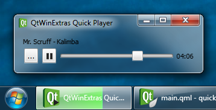
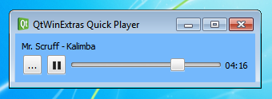

Quick Player
Demonstrates using QtWinExtras in Qt Quick.

The Quick Player example demonstrates how to use the various features provided by the QtWinExtras module in Qt Quick.
Note: This example is a simplified Qt Quick-based version of the Music Player example.
DWM Features
The example uses Windows DWM (Desktop Window Manager) features to visually integrate the window content to the window frame and to make the window translucent and blurred.
The example applies a different look based on whether composition is enabled or not. When composition is enabled, the window is made translucent and the window frame is extended to the client area to make the window content integrate seamlessly to the window frame as shown above.
Win.DwmFeatures { id: dwm topGlassMargin: -1 leftGlassMargin: -1 rightGlassMargin: -1 bottomGlassMargin: -1 }
When composition is disabled, the colorization color is used as a background color for the window.
color: dwm.compositionEnabled ? "transparent" : dwm.realColorizationColor
The following screenshot illustrates how the Quick Player example looks when composition is disabled.

Taskbar Overlay and Progress
The example uses Windows Taskbar for two things; it sets an overlay icon that represents the current music playback state, and it indicates the playback progress in the taskbar button.
The following snippet shows how the taskbar button is prepared. The taskbar progress indicator and the overlay icon are bound to the music playback, and will automatically change whenever the state or attributes of the music playback change.
Win.TaskbarButton { id: taskbar progress.value: mediaPlayer.position progress.maximum: mediaPlayer.duration progress.visible: mediaPlayer.hasAudio progress.paused: mediaPlayer.playbackState === MediaPlayer.PausedState overlay.iconSource: mediaPlayer.playbackState === MediaPlayer.PlayingState ? "qrc:/play-32.png" : mediaPlayer.playbackState === MediaPlayer.PausedState ? "qrc:/pause-32.png" : "qrc:/stop-32.png" }
Thumbnail Toolbar

The Windows Thumbnail Toolbar is used for providing basic music playback controls. These controls can be used to control the application without having to activate the application. The thumbnail toolbar buttons are bound to the music playback, and will automatically change whenever the state or attributes of the music playback changes.
Win.ThumbnailToolBar { id: thumbbar Win.ThumbnailToolButton { tooltip: qsTr("Rewind") iconSource: "qrc:/backward-32.png" enabled: mediaPlayer.position > 0 onClicked: mediaPlayer.seek(mediaPlayer.position - mediaPlayer.duration / 10) } Win.ThumbnailToolButton { tooltip: mediaPlayer.playbackState === MediaPlayer.PlayingState ? qsTr("Pause") : qsTr("Play") iconSource: mediaPlayer.playbackState === MediaPlayer.PlayingState ? "qrc:/pause-32.png" : "qrc:/play-32.png" enabled: mediaPlayer.hasAudio onClicked: mediaPlayer.playbackState === MediaPlayer.PlayingState ? mediaPlayer.pause() : mediaPlayer.play() } Win.ThumbnailToolButton { tooltip: qsTr("Fast forward") iconSource: "qrc:/forward-32.png" enabled: mediaPlayer.position < mediaPlayer.duration onClicked: mediaPlayer.seek(mediaPlayer.position + mediaPlayer.duration / 10) } }